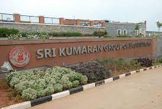
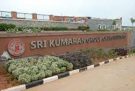
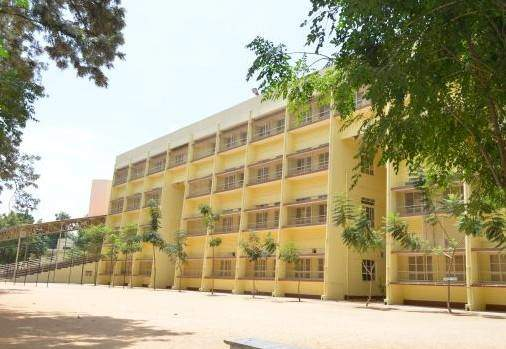
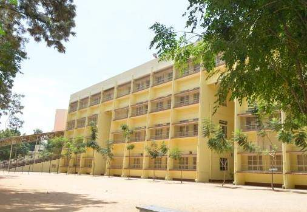
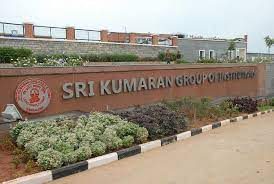
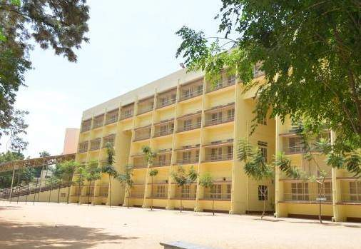

 

Smt. R.Anasuya Devi, the founder is a true example of a light that has kindly led and a beacon that has inspired thousands of people. Life was not easy when she came to Bangalore as a young widow with two children. She educated herself to secure a teaching job in a school in North Bangalore. The idea to start a school came to her when she realized that the middle class families in South Bangalore had to send their children to the Cantonment area for good education. Her primary vision was to provide a home away from home, with a supportive and stimulating environment. Smt.R.A.Devi started the nursery school on a small scale at Tata Silk Farm in the year 1959. Every child deserves a head start in life. From the beginning she ensured excellent education to all the children who entered the portals of the school. The school has grown to what it is today because of her noble ideals of fostering strong values, mutual understanding, respect for culture and high personal endeavor .The school’s motto is inspired by her life and the ideologies that she stood for – to inspire young minds and nurture students for their glorious future.


. The conference was organized by the Perimeter Institute of Theoretical Physics, University of Waterloo, Canada between July 22nd and July 26th 2013. The paper that was jointly presented by both was titled “The canonical Lagrangian approach to three- space general relativity’. Vasudev Shyam has been offered to do a direct Master’s program known as Perimeter Scholars International Program in 2014- 2015.
Shell India, along with the British Council, conducted the Shell Junior National Science Scholars Award this year. It is a written scholarship examination aimed at encouraging high-school students to look at a career in engineering. The examination was open to students of classes 9 and 10, and included questions in the subjects of Physics, Chemistry, Mathematics and General Knowledge. Around 7,000 students across the country attempted the objective-type test. The test also included a single subjective essay question to test the aptitude and motivation of the student towards Science. The top three scorers from each of the six locations were declared regional winners, and were awarded a scholarship of Rs. 50,000 each. Sesh Raghav Sadasivam of class 10 was declared a regional winner, and received the award, along with his mentor teacher, Mrs. Pushkala Parasuraman, in the Award Ceremony held in New Delhi on January 22, 2013.
Athith K of 12C was awarded the Time Scholars young talent search award. Times Scholar is a Times of India initiative that rewards young talent across the country with scholarships. Athith Krishna is one among the top 20 nationwide winners who has won this prestigious scholarship. Cornell University Tata Scholar - Athith Krishna, student of Class XII in the academic year 2012-13 has been offered admission to Cornell University, New York, USA for the undergraduate course. Athith Krishna has also been selected as a Cornell University Tata Scholar and a recipient of the Tata Scholarship for students from India. The Tata Educational Foundation has given him the Cornell Tata Scholarships which will cover 100% of all his needs at the University until he completes his Graduation. He will be pursuing a BS in Material Science and Engineering at the College of Engineering, Cornell University Class of 2017
"A girl's cry" - animation on ozone layer depletion for Adobe Youth Voices Award submitted by Arjun R Rao of 11A on April 20th, 2012 was among the top 20 animations out of 800 projects received. He was awarded Adobe Youth Voices Award